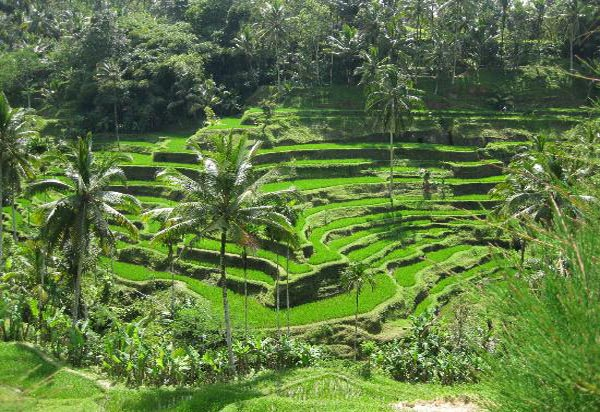

Sawah Terasering Ubud
Indahnya Pemandangan Hijau Persawahan
Pulau Bali, banyak memiliki areal persawahan, tapi tidak semua daerah di Bali, memiliki sawah terasering. Untuk melihat sawah terasering di Bali yang memiliki pemandangan bagus, ada di beberapa tempat, yaitu Jatiluwih Tabanan, Pupuan Tabanan, Antosari (pantai Soka), Busung Biu Buleleng, Tirta Gangga Karangasem dan Tegalalang Ubud.
Objek Favorit Wisatawan
Untuk dapat melihat pemadangan sawah terasering, lokasinya bernama desa Tegalalang. Terletak di sebelah utara Ubud. Tegalalang Ubud sangat terkenal di kalangan para wisatawan dan menjadi objek favorit wisatawan. Karena letaknya sangat berdekatan dengan objek wisata di Bali yang lainnya, seperti Goa Gajah, Tampak Siring dan Kintamani.
Di pinggir jalan di desa Tegalalang Ubud, akan terlihat warung, restoran yang menawarkan pemandangan sawah terasering Ubud. Pemandangan sawah terasering Ubud tidak seluas seperti yang di Jatiluwih. Tapi menawarkan pemandangan tersering yang unik, karena lerengnya sangat miring. Untuk dapat menikmati pemandangan sawah terasering dengan nyaman. Wisatawan hanya perlu membeli makanan atau minuman di salah satu warung yang menghadap ke pemandangan terasering Ubud.
Sawah Terasering Ubud - Tempat Wisata Yang Harus Dikunjungi
Bagi anda yang pertama kali datang untuk liburan ke Bali, pastilah tidak akan tahu cara mencari lokasi dari sawah terasering Ubud. Agar anda tidak tersesat, ada beberapa cara terbaik untuk wisatawan yang belum pernah ke Tegalalang. Dengan menggunakan jasa sewa mobil dengan supir di Bali.
Jika wisatawan menyukai pemandangan alam yang masih asri, tempat wisata Ubud tidak hanya menawarkan pemadangan sawah. Ubud juga memiliki pemadangan sungai. Sungai Ayung namanya. Sungai Ayung sangat terkenal sebagi tempat untuk aktivitas arung jeram di Ubud.